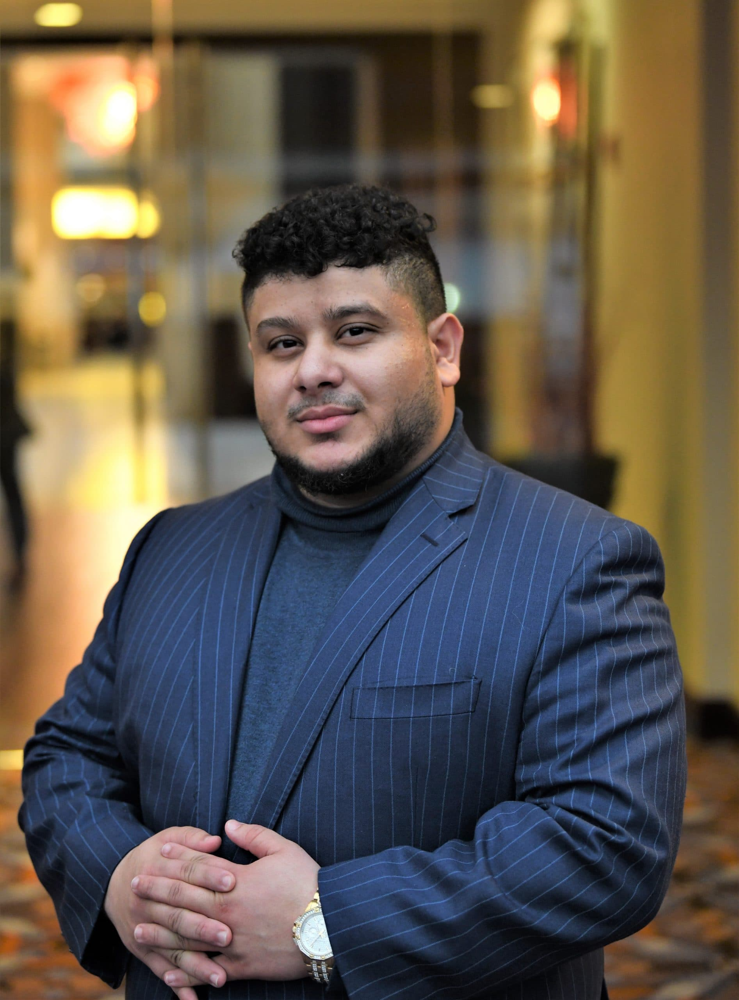

ADVOCACY
A voice for
Palestinian rights.
Grassroots organizing, public education, and advocacy for Palestinian freedom and dignity.
Explore the work
ABOUT MOHAMAD
The background and experiences behind the public work.

MOHAMAD HABEHH
Mohamad Habehh is an advocate, educator, and community organizer whose work includes Palestinian rights, grassroots education, and community engagement.
A Rutgers University graduate with a background in social work and political science, Mohamad has worked with marginalized communities, including incarcerated people. His published biography describes nationwide organizing, workshops, and Friday sermons.
His work with American Muslims for Palestine has brought him into public conversations about Palestine, faith, and political responsibility. He has also participated in interfaith discussion on youth mental health in New Jersey.
Through writing, interviews, and public engagement, visitors can explore his perspective in his own words—and see the community work behind it.
EXPLORE HIS WORK
ADVOCACY
Grassroots organizing, public education, and advocacy for Palestinian freedom and dignity.
Explore the workCOMMUNITY
Joining faith leaders nationwaide to discuss relevant topics and access to community support.
Community conversationsEDUCATION
Workshops, writing, and public conversations connecting faith, history, and civic responsibility.
Explore his perspectives